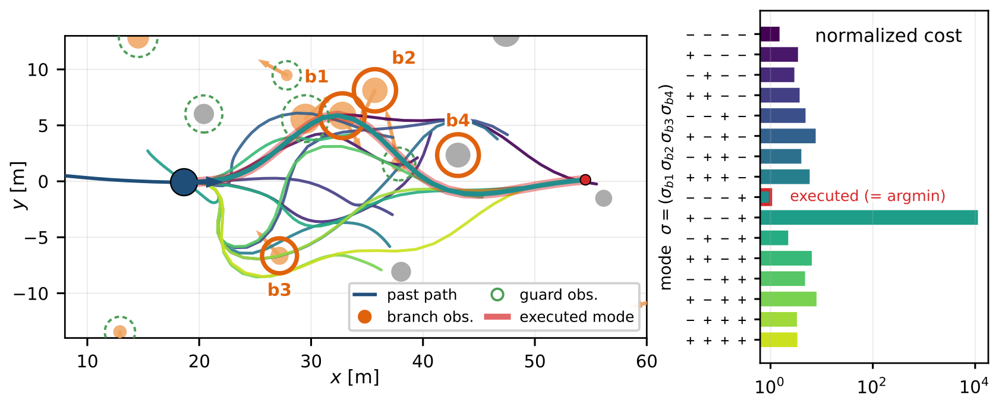
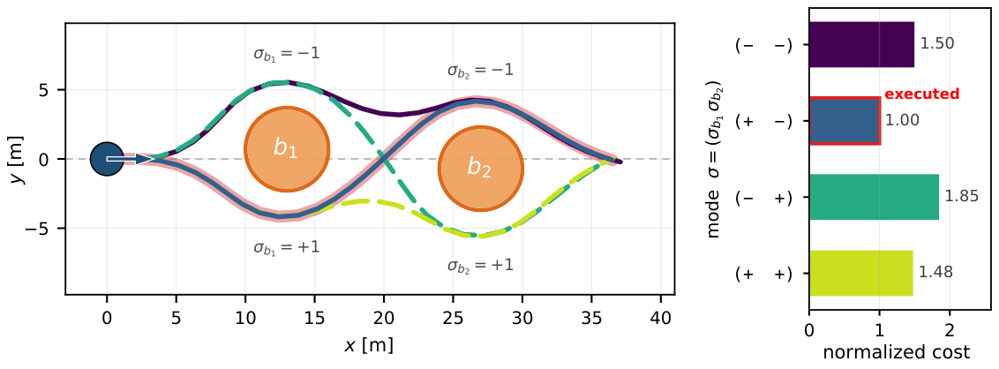
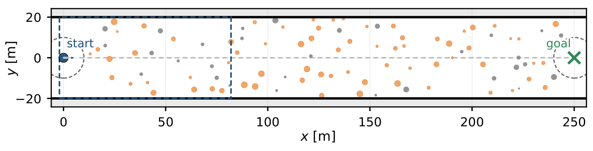
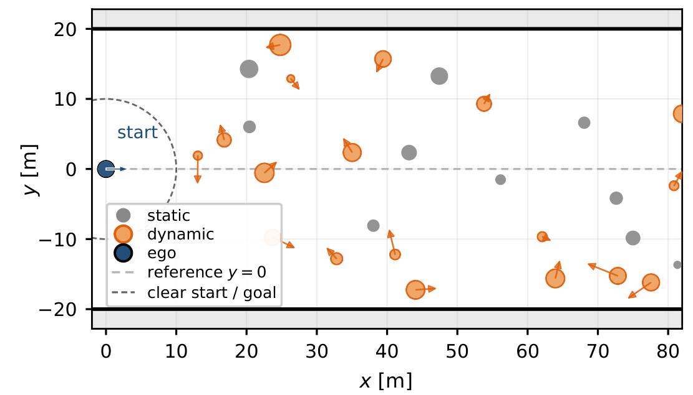
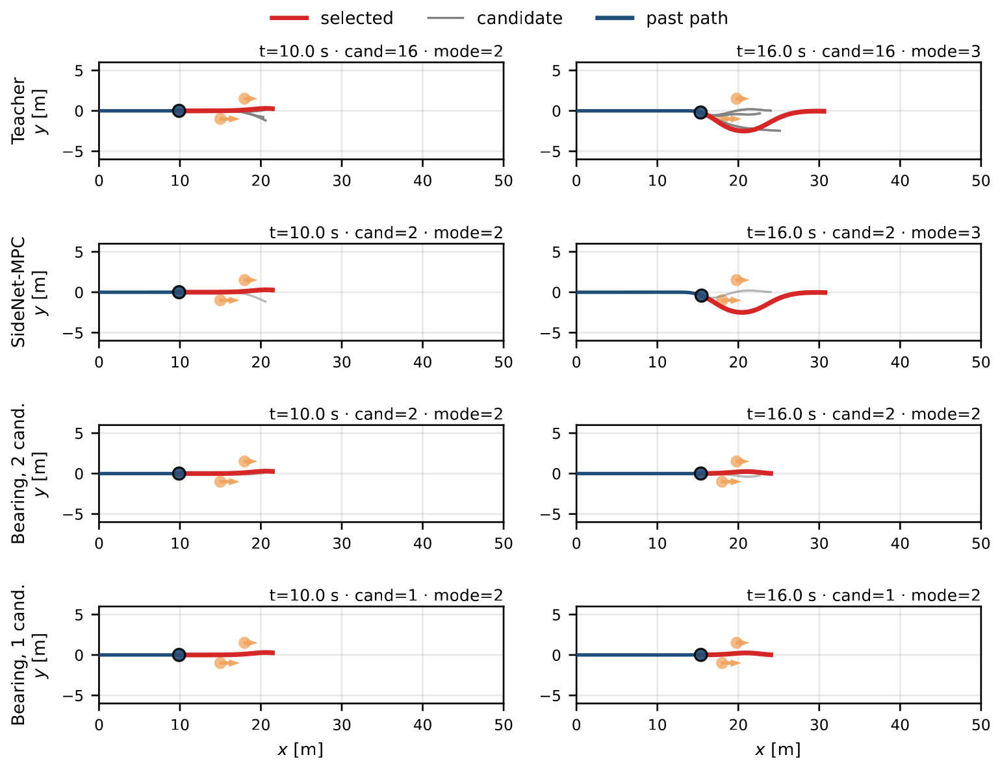
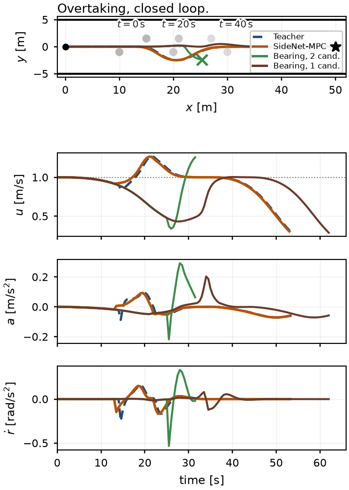
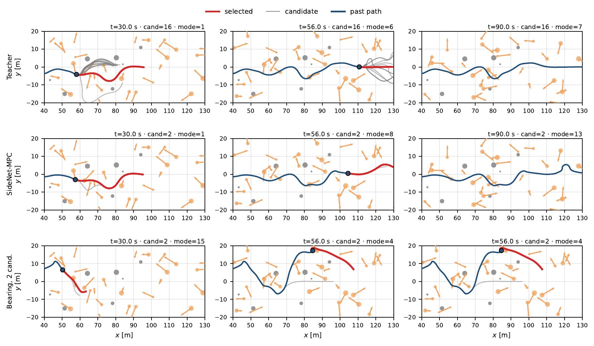
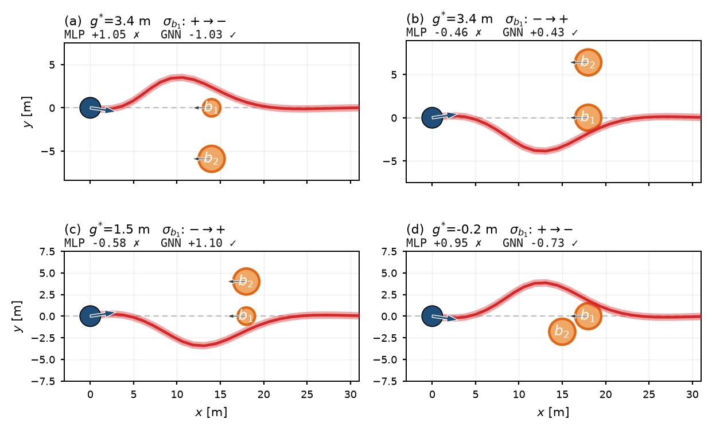
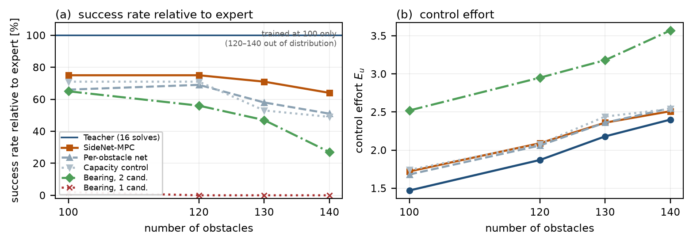

1Kongju National University · 2NVIDIA Research · 3KAIST
Figures and closed-loop videos from the manuscript. Captions are kept short; please refer to the paper for the method.
Multimodal TC-CBF MPC enumerates every left/right combination of the decision-critical obstacles—K = 2Nb parallel OCPs. SideNet-MPC keeps only two: a GNN proposal and the previously executed decision.


Teacher data and the randomized evaluations use the same 250 m × 40 m corridor. Training uses the 100-obstacle mix only; denser scenes are out of distribution.


Every controller in a clip sees the same traffic. Playback is accelerated. Teacher: 16 solves. SideNet-MPC: 2 solves.
Teacher and SideNet-MPC take the same swerve. The two-candidate bearing rule collides at 31.5 s; the single-candidate rule arrives late (62.0 s).
30 static + 70 dynamic obstacles. Teacher and SideNet-MPC both finish the 250 m corridor.
Trained only at density 100. SideNet-MPC still completes under heavier traffic.
Clips start automatically as they scroll into view.
Same overtaking scene and one Monte Carlo seed, frozen at matching times.



A network that judges each obstacle alone cannot see whether two obstacles leave a passable gap. The GNN carries that pairwise gap on its edges.

300 seeds per cell. Training used the 100-obstacle setting only; 120–140 are out of distribution.

| Configuration | 100 | 120 | 130 | 140 |
|---|---|---|---|---|
| Teacher (16 solves) | 61.0 | 44.7 | 34.7 | 33.0 |
| SideNet-MPC | 46.0 (75) | 33.3 (75) | 24.7 (71) | 21.0 (64) |
| Per-obstacle net | 40.0 (66) | 30.7 (69) | 20.0 (58) | 16.7 (51) |
| Capacity control | 43.3 (71) | 31.7 (71) | 18.3 (53) | 16.3 (49) |
| Bearing, 2 cand. | 39.7 (65) | 25.0 (56) | 16.3 (47) | 9.0 (27) |
| Bearing, 1 cand. | 1.3 (2) | 0.0 (0) | 0.0 (0) | 0.0 (0) |
| Configuration | 100 | 120 | 130 | 140 |
|---|---|---|---|---|
| Teacher (16 solves) | 1.73 / 1.47 / 1.97 | 2.04 / 1.87 / 2.50 | 2.37 / 2.18 / 3.01 | 2.48 / 2.40 / 3.29 |
| SideNet-MPC | 1.62 / 1.72 / 2.39 | 1.84 / 2.09 / 2.99 | 2.01 / 2.36 / 3.37 | 2.01 / 2.51 / 3.62 |
| Per-obstacle net | 1.60 / 1.68 / 2.26 | 1.82 / 2.06 / 2.90 | 1.97 / 2.36 / 3.34 | 2.04 / 2.55 / 3.70 |
| Capacity control | 1.57 / 1.74 / 2.39 | 1.81 / 2.08 / 2.98 | 1.96 / 2.44 / 3.54 | 2.02 / 2.54 / 3.74 |
| Bearing, 2 cand. | 2.16 / 2.52 / 3.63 | 2.53 / 2.95 / 4.28 | 2.63 / 3.18 / 4.62 | 3.09 / 3.57 / 5.34 |
On one core, 16 OCP solves take 300 ms versus 2 solves in 28.1 ms, including the network pass. The teacher’s 16-thread batch is 47.5 ms, still 1.7× slower than SideNet-MPC on one core.